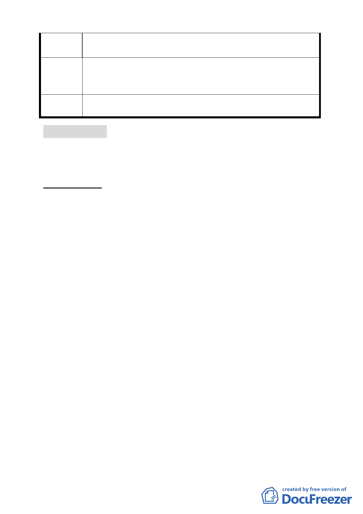

，希望與其他「臺北好好看」的案子，站在同樣基準點上有機
會可以整體開發。
主要計畫容積上限規定的部分，請都市發展局協助去文內
建議辦法 政部營建署予以釐清；另基於申請「臺北好好看」開發計畫有
時程規定，請市府協助儘快釐清。
委員會決
議
本案同意撤案。
討論事項 十六
案名：劃定臺北市文山區公訓段三小段 360 地號等 44 筆土地及萬
芳段三小段 838-1 地號土地為更新單元
案情概要說明：
一、本案位於文山區興隆路三段 255 巷南側、興隆路四段 1 巷北
側及興隆路三段東側之街廓內，面積 3,705 平方公尺(含道路
用地 488 平方公尺）。
二、本更新單元土地使用分區為第三種住宅區、道路用地，土地
包括國有土地 8.93%，市有土地 0.25%及私有土地 90.82%，
建物則均為私有。目前同意參與更新之意願，土地所有權人
達 41.54%，合法建物所有權人達 69.23%。
三、本案基地西側及南側留設 2 公尺以上無遮簷人行道，北側留
設 2 公尺以上無遮簷人行道並與道路順平，以提供舒適人行
空間；東北側集中留設法定空地並規劃綠化空間。
四、本案市府 99 年 7 月 7 日以府都新字第 09930915000 號函送到
會。
五、申請單位：唐富麗。
六、辦理單位：臺北市政府。
七、法令依據：都市計畫法第 66 條；都更條例第 5 條、第 6 條、
第 8 條、第 11 條；北市都市更新自治條例第 15 條。
八、本更新單元前經市府審查符合更新單元劃定基準及環境評估
標準。
- 41 -